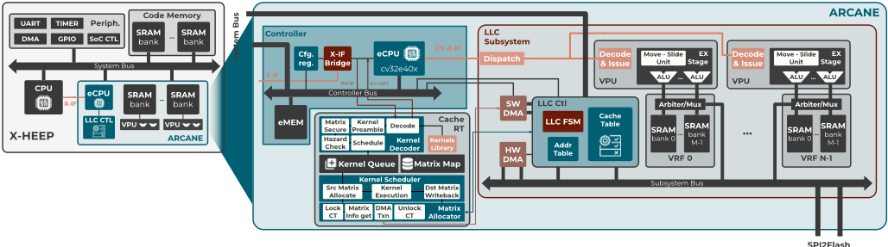
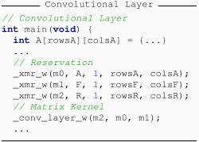
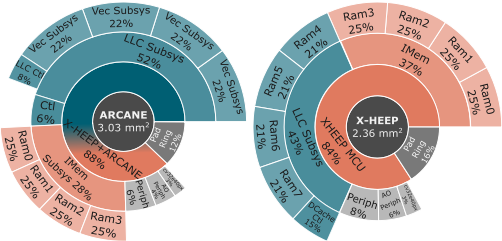
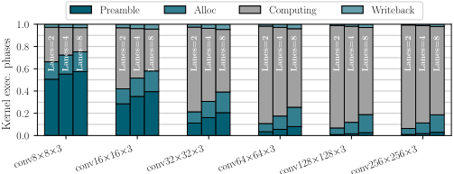
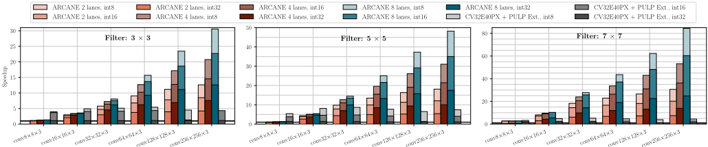

ARCANE：面向近存计算扩展的自适应 RISC-V 缓存架构
该论文针对 von Neumann 架构的 memory wall 瓶颈以及现有 CIM/NMC 方案因数据放置约束带来的软件易用性问题，提出 ARCANE——一个同时充当 LLC 缓存与紧耦合近存计算协处理器的 RISC-V 缓存架构。主机 CPU 通过 OpenHW CV-X-IF 接口将自定义 xmnmc 矩阵指令卸载到缓存控制器内的 CV32E40X eCPU，由 C-RT 运行时完成软件解码、调度与矩阵分配，并经 dispatcher 将向量内核派发到多个 NM-Carus 实例（VPU），配合 Address Table、缓存锁定与软件驱动 2D DMA 管理 WAR/RAW/WAW 冒险及数据搬移，使应用软件无需显式处理同步。在 65nm LP 工艺、250MHz 目标频率下以 Synopsys Design Compiler 完成综合：4-lane 配置面积较基线增加 28.3%，额外缓存控制逻辑占比不足 4%，关键路径未恶化。int8 大尺寸卷积相对标量 CPU 最高加速 84×、相对 XCVPULP packed-SIMD 加速 16×，多实例模式达 120×，整体面积开销 41.3%。
现代数据密集型应用暴露 von Neumann 架构的局限：数据搬运量大、吞吐低、能效差（memory wall）。IMC 在复杂算术运算与存储密度上受限；NMC 虽基于常规数字流程与商用 SRAM macro 更具可扩展性与可靠性，但软件集成困难——应用软件或专用编译器需显式生成内存命令、处理数据放置与同步，制约了 CIM/NMC 的商用普及。论文要解决的问题是：如何让缓存子系统在不增加程序员负担的前提下兼具缓存与近存计算能力，同时提供软件可扩展的 ISA 抽象。
将低功耗 MCU 的传统数据存储子系统替换为智能 LLC：全相联缓存（cache line 长度等于 VPU 向量寄存器容量、近似 LRU、write-back 策略、命中单周期、miss/writeback 由 DMA 处理）与近存计算协处理器二合一。主机 CPU 经 OpenHW Group CV-X-IF 卸载自定义 xmnmc 矩阵指令（0x5b major opcode，含 xmr 矩阵延迟绑定指令与最多 31 种 xmkN 内核指令），bridge 采样指令后中断触发 eCPU（CV32E40X）上的 C-RT 运行时进行软件解码、调度与矩阵分配，将内核分解为基于 NM-Carus 向量式自定义扩展的微程序，经 dispatcher 派发到多个 VPU；通过 Address Table、busy computing 状态标记、缓存锁定机制与软件驱动 2D DMA 处理 WAR/RAW/WAW 冒险、数据布局与 write-back（fetch-on-write），实现主机 CPU 与 eCPU 的 OoO 并发执行。C-RT 采用静态内存分配、生产者-消费者内核队列，Kernel Decoder 以 O(1) 查找内核库并通过逻辑矩阵重命名解决冒险。
摘要：在 8-bit 数据上执行最坏情况 32-bit CNN 工作负载时，相对同系统采用传统缓存的配置性能提升 30×–84×，面积开销仅 41.3%
4-lane 中间配置面积较基线增加 28.3%（向量流水线占 22%、控制器占 5%），额外缓存控制逻辑占系统总面积不足 4%
65nm LP 工艺、250MHz 目标频率下综合，ARCANE LLC 未增加关键路径
非计算阶段开销：preamble 随输入规模从 60% 降至 2.89%，allocation 随 lane 数增长全局饱和于 15%，writeback 在最大矩阵时降至 2%，最坏情况下计算阶段开销饱和于 20%
256×256 int8 3×3 卷积：8-lane 配置相对 CV32E40X 加速 30×，而 CV32E40PX 仅 5×；CV32E40PX 因重复数据加载的扩展性峰值仅 8.6×
4 VPU、8 lane 多实例模式：相对 CV32E40X 加速 120×、相对 CV32E40PX 加速 1.6×；多核 packed-SIMD 方案在最优条件下理论加速峰值仅 75×
峰值吞吐 17.0 GOPS@265MHz，约为 BLADE（5.3 GOPS）的 3.2×，面积效率 9.2 对 9.1 GOPS/mm²（BLADE 面积小 3.18×）；Intel CNC 峰值 25.0 GOPS，为 ARCANE 的 1.47×，但仅支持 MAC 运算
8-bit 256×256×3、7×7 卷积层：相对标量 RV32IIMC CPU 加速 84×，相对 XCVPULP packed-SIMD 与 DSP 增强 ISA 加速 16×
相对已有工作的区别：1) 将 NM-Carus 的 NMC 集成范式与指令级卸载机制（CV-X-IF 协处理器接口）结合，使 LLC 本身即协处理器，应用软件无需显式管理数据搬移与同步；2) 提出 software-defined 的 xmnmc 矩阵 ISA，形成'主机 CPU 复杂指令由 eCPU 软件解码 + 向量微程序由硬件执行'的两级抽象，且可通过更新软件解码器扩展 ISA（最多 31 种内核）；3) 与 T-HEAD RVM 提案的立即加载 matrix load 不同，xmr 采用延迟绑定，将数据加载推迟到内核实际执行时；4) 相比 BLADE（仅基本算术运算）与 Intel CNC（仅 MAC），支持可扩展的复杂融合内核（如 2D 卷积+max-pooling+ReLU）；5) 由单一 eCPU 通过 dispatcher 管理多个 NM-Carus 实例构成可扩展 LLC，并配套完整的缓存锁定与 AT 冒险管理机制。
相关度级别：high
命中能力域：2.1 IP 架构与微架构 | 2.2 RTL 设计与实现
理由：论文完整命中团队 2.1 与 2.2 两个能力域的核心技术：其对象是一个存储子系统 IP（智能 LLC），论文给出了顶层与模块级架构设计（缓存控制器、VPU 阵列、dispatcher、bridge、eCPU）、面向 PPA 的多配置架构权衡（2/4/8 lane 的面积分解与吞吐/面积权衡），并以可综合 RTL 在 65nm LP、250MHz 下完成 Design Compiler 逻辑综合与时序确认（关键路径不恶化），与团队'架构定义→RTL 实现→PPA 交付'的工程场景直接对应。此外，论文中缓存/内存子系统与计算单元并发运行时的一致性管理手段（锁定机制、Address Table、WAR/RAW/WAW 冒险规避、软件驱动 2D DMA）对团队内存控制器 IP 中多主并发访问与 hazard 管理设计有直接方法借鉴价值；近存计算也是存储 IP 潜在的演进方向。需注意其应用场景（边缘 MCU 的 in-cache computing）与团队 DDR/HBM/UCIe 协议 IP 产品线不同，价值主要在架构模式与方法学层面。
建议动作：深入精读并做内部分享
arXiv:2504.02533v3 [cs.AR] 2025年4月7日
Vincenzo Petrolo ∗ Flavia Guella ∗ Michele Caon ∗ Pasquale Davide Schiavone † Guido Masera ∗ Maurizio Martina ∗
∗ VLSI 实验室
意大利都灵理工大学
{ vincenzo.petrolo,flavia.guella,michele.caon,guido.masera,maurizio.martina } @polito.it
† 嵌入式系统实验室，瑞士洛桑联邦理工学院（EPFL）
davide.schiavone@epfl.ch
摘要——现代数据驱动型应用暴露了冯·诺依曼体系结构的局限性——大量的数据搬运、低吞吐量以及糟糕的能效。加速器能够提升性能，但缺乏灵活性，且需要进行数据传输。现有的存内计算与近存计算解决方案缓解了这些问题，但由于数据放置约束而面临易用性方面的挑战。我们提出了一种新颖的缓存体系结构，它可同时用作紧耦合的近存计算协处理器。我们的 RISC-V 缓存控制器执行来自主机 CPU 的自定义指令，通过将向量操作分派至缓存存储子系统内的近存向量处理单元来完成。该体系结构将存储器同步与数据映射从应用软件中抽象出来，同时提供基于软件的指令集体系结构（ISA）可扩展性。在执行最坏情况的 32 位卷积神经网络（CNN）工作负载时，我们的实现在处理 8 位数据方面相比采用传统缓存的同一系统可获得 30× 至 84× 的性能提升，而面积开销仅为 41.3%。
关键词——缓存内计算、自定义 ISA 扩展、RISC-V、边缘计算。
由于数据密集型工作负载，现代计算系统对更高性能和能效的需求日益增长。传统的冯·诺依曼体系结构由于所谓的“存储墙”[1]瓶颈而难以扩展，影响了性能和能效。为了克服这些限制，人们已探索了存内计算（CIM）等替代性计算范式。存内计算（IMC）将处理功能集成到存储阵列内部，减少了数据搬运，并提升了性能和能效。然而，它在复杂算术运算和存储密度方面面临挑战。近存计算（NMC）采用常规数字设计流程和商用存储器宏单元，与IMC相比具有更好的可扩展性和可靠性。本文提出的ARCANE体系结构以NMC范式为基础，旨在弥合基于中央处理器（CPU）的计算的灵活性与CIM在能耗和性能方面的优势之间的差距。它利用基于OpenHW Group CORE-V-X-IF（CV-X-IF）协处理器接口[2]的紧耦合指令卸载机制，将复杂指令卸载到RISC-V缓存控制器；该控制器借助[3]中提出的面向CIM的自定义指令集体系结构（ISA）扩展，将这些指令实现为向量内核。换言之，ARCANE缓存系统同时充当紧耦合协处理器，它将复杂的缓存内计算操作抽象在一个软件定义的ISA之中，该ISA封装了底层的自定义向量ISA，而后者用于对构成缓存存储空间的高效近存向量处理单元（VPU）进行编程。ARCANE缓存体系结构的主要贡献如下：
V. Petrolo和F. Guella对本工作做出了同等贡献。
本文其余部分的组织结构如下：第II节介绍文献中的相关工作；第III节描述ARCANE的体系结构并阐述其设计动机；第IV节详细介绍可定制的ISA以及运行在缓存控制器中的运行时系统；第V节报告并讨论实现与性能数据；最后，第VI节对全文进行总结。
将处理单元嵌入缓存层次结构中的存内计算（CIM）方法具有消除系统存储器与专用计算单元之间数据传输的固有优势。基于静态随机存取存储器（SRAM）的存内计算（IMC）方案 [4], [5], [6], [7] 将缓存内部的SRAM块重新用作单指令多数据（SIMD）加速器，利用位线计算实现高面积效率与能效，但与传统的商用现货SRAM [8] 相比，其代价是存储密度降低且操作灵活性受限。
相比之下，近存计算（NMC）方案将算术单元置于存储器子阵列之外，利用密度更高的商用SRAM阵列和常规的数字实现流程，从而获得更好的可移植性。这些系统通过在靠近存储器的位置处理数据，避免了经由系统互连进行的高开销传输，从而实现更高的吞吐量和能效。典型的NMC体系结构依赖于对向量 [9] 或矩阵 [10] 进行操作的数据并行执行单元，以加速神经网络推理中的乘累加（MAC）运算。
软件集成方面的挑战限制了CIM的商业化普及 [11]。IMC系统将发给存储器的指令编码为常规的总线事务 [4]，因而需要应用软件或专用编译器来生成必要的命令。通过一个类似于协处理器的专用指令卸载接口将CIM设备连接到主机中央处理器（CPU），可以实现更为精简的软件集成 [9]。这种方式便于将计算指令插入到所生成的应用代码中，并保证与其他在途指令的同步，而该同步由CPU隐式处理。
本文提出的体系结构建立在 [3] 中随NM-Carus提出的NMC集成范式以及 [9] 中所采用的指令级卸载机制之上，使应用软件无需显式地处理存储器管理以及与缓存的同步。
所提出的缓存内计算范式旨在通过在最后一级缓存（LLC）中直接实现计算功能，来应对数据密集型应用中高延迟存储器访问的挑战。在此背景下，ARCANE 提供两大主要优势：1）它显著降低了最后一级存储器上长延迟操作的影响，实际上使其对系统透明；2）它通过利用缓存资源，促进数据密集型任务的高效执行，支持乱序（Out-of-Order, OoO）程序执行并提升整体系统吞吐量。
ARCANE（图1）用一个既充当缓存又充当计算单元的智能 LLC，取代了低功耗微控制器（MCU）中传统的数据存储子系统。它通过两个从端口连接到系统总线，此外还具有面向外部存储器（例如闪存或伪静态随机存取存储器（PSTRAM））的端口。此外，主机 CPU 可通过 CV-X-IF [2] 卸载复杂的自定义 RISC-V 扩展，以执行在 LLC 内处理缓存数据的操作。因此，从主机 CPU 的角度来看，所提出的 LLC 既作为缓存运行，又作为外部协处理器运行。LLC 内的计算会限制活跃缓存区域，从而引入额外的控制复杂性，并可能影响性能。然而，得益于 (2)，缓存内计算可以部分抵消由长延迟复杂操作造成的延迟。在 ARCANE 内部，为缓解潜在的性能下降，LLC 控制器确保对缓存资源进行高效管理，在计算吞吐量与存储器一致性之间取得平衡。ARCANE LLC 中的计算通过采用 [3] 中提出的近存储器计算（NMC）范式来实现。自定义的 LLC 内扩展基于微程序构建，而这些微程序构建在名为 NM-Carus 的 NMC IP [3] 中所提出的类向量自定义扩展之上。选择类向量指令是为了限制与控制流指令相关的开销，并利用单指令多数据（SIMD）能力来处理并行工作负载。与 [3] 中提出的工作不同，本文采用由单个嵌入式 CPU（eCPU）管理的多个 NM-Carus 实例来构建 LLC 系统。该 eCPU 基于 OpenHW Group 的 CV32E40X——一种基于 [12] 的 4 级顺序执行 RISC-V 核——它将自定义的类向量近存储器操作卸载到每个 NM-Carus 实例，这些实例充当向量处理单元（VPU）。一个分发器（dispatcher）负责向所选 VPU 进行分发，从而保持架构的模块化与可扩展性。一个连接到系统总线的从端口便于主机 CPU 与嵌入式存储器（eMEM）之间的交互，用于上传 eCPU 固件并配置存储器映射寄存器，从而确保部署与可编程性方面的灵活性。
第III-A节详细分析了ARCANE的体系结构，重点关注其标准功能与缓存内计算功能。此外，第III-B节讨论了从主机CPU到eCPU的卸载机制，并引入了软件解码指令的概念，从而进一步提升了系统的灵活性与易用性。
1) 缓存正常工作模式：末级缓存（LLC）被设计为全相联缓存，其缓存行总数等于系统的向量寄存器总容量（即向量处理单元（VPU）数量乘以每个 VPU 中的向量寄存器数量）。缓存行长度被配置为与所支持的最大向量长度相匹配，以简化内存管理，并确保计算操作与缓存操作之间的一致性，从而避免内存碎片问题。缓存命中在单个周期内即可完成判定，而缓存缺失与写回则由专用的直接内存访问（DMA）单元处理。LLC 采用基于计数器的方法实现了最近最少使用（LRU）替换策略的一种近似版本，以保持有效的缓存利用率。此外，为提升性能，系统强制执行写回（write-back）写入策略，即在脏缓存行被替换时将其写回其原始内存位置。
2) 缓存锁定与冒险管理：缓存内计算使主机 CPU 与 eCPU 的程序流能够并行执行。缓存控制器必须在缓存运行时（C-RT）与主机 CPU 之间进行协调，以处理对 VPU 的争用。锁定机制通过一个内存映射配置寄存器实现，该寄存器由 eCPU 写入、由控制器读取，用于同步缓存访问。当 eCPU 获得锁后，主机 CPU 将被阻止访问缓存，直至锁被释放。反之，在主机 CPU 操作进行期间，eCPU 可能发出的锁请求将不会获得批准，从而使 C-RT 停顿，直至该内存操作结束。
在内核执行期间，分配给内核操作数的缓存区域会被标记为忙碌计算（busy computing）状态，以防止被常规操作访问，从而在启用缓存内计算的同时确保缓存一致性。主机 CPU 与 eCPU 的并发操作可能引发潜在的冒险。当主机 CPU 对活动内核的某个源操作数发出写入（store）操作时，会发生读后写（Write-After-Read, WAR）冒险，可能在分配完成之前覆盖该操作数。由于内核操作数的分配涉及在按照内核布局排列的 VPU 缓存行中创建临时副本，因此必须通过一种阻塞机制来阻止对源操作数的写入操作，直至分配最终完成。如果主机 CPU 在计算完成之前读取内核结果，则会产生写后读（Read-After-Write, RAW）冒险；而如果内核目标操作数覆盖了后续写入操作的结果，则会出现写后写（Write-After-Write, WAW）冒险。所有针对内核目标操作数的操作都必须被阻塞，直至内核写回完成，以避免冲突。一旦内存争用得到解决，控制器便会摆脱停顿状态。
3) Address Table (AT): The system employs this auxiliary table to manage kernel source and destination states, ensuring proper synchronization and preventing data corruption while maintaining high throughput for in-cache computation. Each AT entry contains the start and end addresses of the operands, along with a validity and a status flag. The eCPU updates the AT when matrices are registered and sets their status to busy according to the hazardavoidance policy. Additional status bits in the Cache Table (CT) indicate whether a cache line contains a source or a destination to streamline access. This approach allows the AT to be checked only when a corresponding cache line is marked as a source or destination, keeping a one-cycle delay in case of a hit. Cache misses always involve an AT lookup to determine if the request pertains to an allocated operand. If the required element belongs to a critical cache line but is not part of an operand, the entire line is loaded from memory, marked as containing an operand data and the request is served. This mechanism preserves program correctness by stalling only critical memory requests while allowing non-critical operations to proceed.
4) Software-Driven DMA: During the kernel allocation phase, the eCPU leverages X-HEEP's specialized DMA supporting 2D

SPI2Flash
transactions, transferring operands from the main memory to the selected VPU in the required matrix format. To optimize latency, the LLC controller updates cache entry statuses upon receiving a DMA request, bypassing the need for software to search the CT. The DMA requests, as depicted in Figure 1, are routed through the LLC controller, which forwards data either from the cache (on a hit) or from the external off-chip memory (on a miss). The controller updates hit lines associated with sources or destinations and marks the lines required for computing as busy computing , handling writeback if required. During the kernel write-back, the cache follows a fetch-on-write policy, updating destinations directly in the cache and marking the corresponding lines as dirty .
图1所示的桥接器在主机CPU与eCPU之间提供了统一接口，支持通过CV-X-IF卸载矩阵运算。相关操作由eCPU通过中断驱动、内存映射的机制进行处理，对主机CPU完全透明。桥接器通过CV-X-IF采样来自被卸载RISC-V指令的opcode、func5以及寄存器操作数，使eCPU能够访问这些数据。在发生卸载时，桥接器触发一个中断，由eCPU在软件（SW）中对该指令进行译码。一个专用的eCPU寄存器记录译码结果，桥接器再通过CV-X-IF将该结果转发给主机CPU。随后，主机CPU通过桥接器发送commit或kill信号，桥接器在收到kill应答后进入空闲状态。对于继续进入执行阶段的操作，桥接器会通知主机CPU，使其能够以乱序（OoO）方式继续应用程序的工作流程。
尽管具有上述优势，NMC（近存计算，Near-Memory Computing）在数据驱动应用（如神经网络、信号处理）中的广泛采用，往往受限于程序员在编写内核（kernel）时所面临的复杂性。这一过程要求深入理解硬件架构以及存储器层次结构中精确的数据布局。通过将内核封装为单条复杂指令，可以缓解这些挑战，从而将数据管理卸载给NMC子系统中现有的CPU控制器。CPU控制器以软件方式对复杂的缓存内指令进行译码，在几乎不影响应用吞吐量的前提下提供了更高的灵活性，如第V-B节所示。内核本身代表了执行该复杂缓存内指令的微程序，它通过利用文献[3]中提出的定制近存类向量（vector-like）RISC-V扩展构建而成，而这些扩展则由NMC实例在硬件（HW）中译码和执行。这种分层方法使得从主机CPU的角度来看，可编程性变得简单直接：主机CPU只需处理紧凑且定义明确的复杂缓存内指令，同时借助软件（SW）定义的指令获得灵活性，并借助以并行数据通路实现的类向量近存指令获得高性能。
下一节将介绍一种可重构的缓存内软件定义RISC-V矩阵指令集架构（ISA），该架构抽象了NMC的复杂性。随后，将对驻留在NMC子系统内的软件系统进行详细讨论。
xmnmc 扩展在 RISC-V Custom2 25 位编码空间内实现，使用 0x5b 主操作码。为了最大化单条指令的效用，每个源寄存器被划分为 16 位对，其中四个寄存器分配用于矩阵寄存器索引，两个保留用于标量参数 α 和 β。这种配置在保持灵活性的同时，可容纳参数密集型内核，例如通用矩阵乘法（GeMM）。为确保高度抽象，该扩展仅包含两类指令：
1) 矩阵保留（xmr）：xmr 指令将矩阵的内存地址和形状绑定到逻辑矩阵寄存器。借助末级缓存（LLC）子系统内的软硬件协作，无需程序员付出额外努力即可确保内存一致性。与 T-HEAD RVM 提案 [13] 所提出的矩阵加载指令不同，xmr 并不会立即将矩阵数据加载到内存中。相反，它只是建立一个绑定，将内存加载推迟到后续阶段，例如由矩阵内核操作显式请求时。这种延迟方式抽象了内存管理的复杂性，显著减轻了程序员的工作量。
2) 矩阵内核（xmkN）：矩阵内核指令记作 xmkN，其中 N ∈ [0,30]，最多可定义 31 种不同的复杂矩阵内核操作。0x5b 操作码中的 func5 字段指定内核操作。可重编程软件译码器进一步增强了这种灵活性，使其能够进行更新以及进一步的 ISA 扩展。
在内部，内核将矩阵表示为向量寄存器组，从而最大限度地复用所选 NMC 架构 [3] 提供的自定义类向量扩展。目前已实现五种复杂矩阵内核，其中部分继承自现有实现 [3]。
| Mnemonic. | Data sources.hi(rs1) | Data sources.lo(rs1) | Data sources.hi(rs2) | Data sources.lo(rs2) | Data sources.hi(rs3) | Data sources.lo(rs3) | Description. |
|---|---|---|---|---|---|---|---|
| xmr.[w, h, b] xmk0.[w, h, b] xmk1.[w, h, b] xmk2.[w, h, b] xmk3.[w, h, b] xmk4.[w, h, b] | hi(&A) α α stride - - | lo(&A) β - win_size - - | A.stride ms3 - - - - | md md md md md md | A.cols ms1 ms1 ms1 ms1 ms1 | A.rows ms2 - - ms2 ms2 | Matrix reserve GeMM LeakyReLU Maxpooling 2D Conv. 3-ch. 2D Conv. Layer |
| Mnemonic. | Data sources.hi(rs1) | Data sources.lo(rs1) | Data sources.hi(rs2) | Data sources.lo(rs2) | Data sources.hi(rs3) | Data sources.lo(rs3) | Description. |
为了展示 xmnmc 扩展的抽象能力，已实现了一种受 ImageNet 启发的 3 通道 2D 卷积内核操作。该内核集成了 2D 卷积、最大池化和 ReLU 激活，同时支持任意维度的矩阵。
清单 1 给出了使用 xmnmc 的示例。
C-RT is a lightweight runtime system designed to perform three core tasks: software decoding of matrix operations, their scheduling and execution, and matrix allocation. It is executed only by the eCPU within the LLC. These modules operate independently but can communicate. C-RT operates as a single-threaded, preemptive runtime, ensuring efficient handling of offloaded matrix operations, even during kernel execution. It follows a producer-consumer model centered around a statically allocated kernels queue.
C-RT employs a static memory allocation philosophy, offering two key benefits: predictable runtime without memory fragmentation and the ability to analyze maximal stack usage. Critical structures, such as the kernel queue and the matrix map, are preallocated to fixed sizes determined by system configuration. For instance, the matrix map supports a configurable number of logical matrix registers. A user-configurable kernel library allows custom kernels to be added before C-RT compilation. Additionally, C-RT supports a deep-sleep mode for power efficiency when no operations are pending.
The primary modules of C-RT, are the Kernel Decoder, Kernel Scheduler, and Matrix Allocator:
1) Kernel Decoder: Operates within the interrupt handler, decoding matrix operations offloaded by the host CPU. It retrieves kernel information, such as preambles and function addresses, using the operation's opcode and func5 fi eld with O (1) complexity access to the kernel library. If the operation is recognized, the kernel preamble is executed, and upon success, the operation is scheduled and added to the kernel queue. Due to ooo communication with the host CPU, data-inbound matrices may risk modification before subsequent computations. To address this, the Kernel Decoder records the start and end addresses of the memory region in the AT, preventing undesired reads/writes to a destination/source operand still required by pending matrix operations. Additionally, to mitigate hazards such as having a xmr overwriting an older reservation still in use, the Kernel Decoder employs a hazard checker that internally renames logical matrices effectively solving the hazard. Notably, matrix allocation does not happen during xmr execution. Instead, it is deferred until explicitly required by a kernel operation, enabling kernel-dependent layout optimization.
2) Kernel Scheduler: Manages the execution of matrix operations. Before execution, it selects an appropriate VPU based on a policy that prioritizes VPUs with the fewest dirty cache lines. Once a VPU

is selected, the scheduler invokes the Matrix Allocator to prepare source matrices with the required layout. After kernel execution, the scheduler determines whether the destination matrix will serve as a source operand in future operations. If not, it writes the matrix back to memory using the Matrix Allocator Application Programming Interface (API).
3) 矩阵分配器（Matrix Allocator）：负责矩阵操作的内存管理。它接收矩阵操作数的布局信息，据此对 2D DMA 传输进行编程，将数据从存储器搬运至所选的向量处理单元（VPU）。为防止与主机 CPU 在缓存行访问上发生冲突，分配器必须首先获取缓存控制器上的锁。矩阵分配器还通过按矩阵的有效维度进行分配，将对吞吐量的开销影响降至最低。定制的 DMA 控制器通过检测对脏缓存行的写入并触发写回来确保数据完整性。分配过程完成后，矩阵分配器释放缓存控制器的锁。在内核执行完毕后进行的写回阶段，矩阵分配器锁定末级缓存（LLC）控制器，并对一次 2D DMA 传输进行编程，将分散的矩阵形数据整合为 LLC 内部的一段连续数组。如果包含该矩阵的缓存行尚未存在于 LLC 中，则先将其加载，再用矩阵运算新计算得到的数据对其进行更新。这确保了任何针对已更新数据的挂起访问请求都能及时地以最新数据得到服务。传输完成后，矩阵分配器将先前占用的缓存行标记为空闲，并释放 LLC 控制器和存储器区域。随后，通过修改 AT 的访问权限，该存储器区域即可供主机 CPU 访问。
ARCANE 的逻辑综合采用 Synopsys Design Compiler ® 2020.09 完成，面向最坏工作条件下的低功耗 65nm LP CMOS 工艺库，目标时钟频率为 250MHz。ARCANE 被封装于可扩展异构高能效平台（eXtendible Heterogeneous Energy-Efficient Platform, X-HEEP）微控制器（MCU）框架之中，取代了传统的数据存储器。共综合了三种配置，为平衡计算吞吐量与面积开销提供了一系列设计权衡，各配置的区别在于通道（lane）数量不同，因而每个 VPU 的存储体数量也随之不同。在所有配置中，实现 RV32IMC 指令集的 cv32e40x 核心作为 eCPU，并配备 16kiB 的 eMEM。MCU 的指令存储器由 4 个容量各为 32kiB 的存储体组成，总计 128kiB；数据缓存的总容量为 128kiB，被划分为 4 个 VPU，其向量长度和缓存行大小均为 1kiB。X-HEEP 系统采用 cv32e40px 核心 [12]，指令存储器容量与之相同，并增配了标准的数据 LLC，被用作公平比较的基准。表 II 对综合得到的各配置进行了比较，突出显示了它们相对于基准的面积开销。如图 2 所示，ARCANE 引入的额外面积主要源于其增强的计算能力，而用于管理并发计算与存储器操作的额外控制逻辑所造成的影响仍然可以忽略不计。对于中间的 4 通道配置，ARCANE 相对于基准的面积增加为 28.3%，其中 22% 归因于向量流水线，5% 归因于分布于 eCPU 与 eMEM 之中的控制器。随着通道数量的增加，面积开销也随之增长，其原因包括计算逻辑更加复杂、LLC 划分导致的存储密度下降以及布线复杂度提高。值得注意的是，额外的缓存控制逻辑占总系统面积的比例不足 4%。
最后需要指出的是，ARCANE LLC 并不会增加 250MHz 目标频率所对应的关键路径。
| Conf | ARCANE (4 VPUs a , 2 lanes) | ARCANE (4 VPUs a , 4 lanes) | ARCANE (4 VPUs a , 8 lanes) | X-HEEP[14] (4 DMem Banks a ) |
|---|---|---|---|---|
| Area [ µ m 2 ] | 2 . 88 × 10 6 (+ 21 . 7 %) | 3 . 03 × 10 6 (+ 28 . 3 %) | 3 . 34 × 10 6 (+ 41 . 3 %) | 2 . 36 × 10 6 |
| Area [kGE] c | 1996 | 2105 | 2318 | 1640 |
| Conf | ARCANE (4 VPUs a , 2 lanes) | ARCANE (4 VPUs a , 4 lanes) | ARCANE (4 VPUs a , 8 lanes) | X-HEEP[14] (4 DMem Banks a ) |

Providing abstraction to programmers is a primary goal of the xmnmc extension, achieved through software decoding, allocation, kernel execution, and writeback phases. In listing 1, multiple xmr instructions define kernel operands in the preamble phase, deferring data loading to kernel execution. Data movement during allocation and writeback is handled by DMA transfers. These phases introduce throughput overhead. A worst-case study of a 3-channel 2D convolution kernel with 3 × 3 fi lters on int32 integers was conducted using 2-, 4-, and 8-lanes ARCANE shown in Figure 3. Preamble phase overhead decreases exponentially with input size, from 60% for small inputs to 2.89% for larger ones, making ARCANE a suitable solution for relatively large input sizes. Allocation overhead grows with lane count, saturating globally at 15%, proportional to the input size. Writeback overhead falls linearly with input size, reaching 2% for the largest matrices. As inputs increase the compute phase dominates as input size increases, with overhead saturating at 20% under worstcase conditions.
We compare ARCANE with the state-of-the-art (Section II), including a baseline CV32E40X CPU core for speedup measurement and the CV32E40PX [12], a core implementing the XCVPULP ISA

extensions for 8- and 16-bit data, supported by the OpenHW Group toolchain. We use a 3-channel 2D convolution layer (Listing 1), relevant to edge AI and tiny CNNs, for comparison with varying filter sizes, ARCANE lane configurations, and data types. Results (Figure 4) show that ARCANE's 2-lane configuration achieves peak throughput at 64 × 64 inputs, saturating faster with larger filters due to lane limits. In int8 , prevalent in tinyML, performance saturation occurs in 2-lane setups, while 4- and 8-lane setups show consistent speedups with larger inputs due to optimized DMA transfers reducing allocation times. Although CV32E40PX outperforms ARCANE at smaller input sizes, its scaling peaks at 8 . 6 × due to overhead from repeated data loading. ARCANE's overhead is higher for smaller inputs but excels in processing large datasets. For instance, at 256 × 256 inputs with int8 3 × 3 fi lters, ARCANE's 8-lane setup achieves a 30 × speedup over CV32E40X, compared to CV32E40PX's 5 × . In multi-instance mode with 4 VPUs and 8 lanes, ARCANE achieves a 120 × speedup compared to CV32E40X and 1 . 6 × compared to CV32E40PX, with area utilization comparable to a 15-core CV32E40PX system, excluding logic and bus contributions. Multi-core implementations relying on packed-SIMD instructions introduce significant overhead from frequent instruction cache accesses, causing memory contention and synchronization delays. Even under optimal conditions, the theoretical speedup peaks at 75 × , far below ARCANE's.
如第II节中的动机所述，本文选择BLADE [4]与Intel CNC [9]作为对比的候选方案。由于二者所支持的操作集合受限，采用3通道2D卷积层进行直接对比并不可行。尽管如此，仍可对二者的峰值吞吐率进行比较。鉴于此类解决方案的工艺节点存在差异，结果采用330MHz的工作时钟频率进行缩放，该频率为65nm节点下嵌入式32KiB SRAM的典型值。BLADE [4]实现了一种近存计算（NMC）架构，其缩放后的面积为580 × 10³ µm²，比ARCANE小3.18倍。然而，其峰值吞吐率被限制在5.3 GOPS¹，而ARCANE运行于265MHz时可达17.0 GOPS的峰值吞吐率——提升约3.2倍。换算为面积效率，BLADE为9.1 GOPS/mm²，而ARCANE为9.2 GOPS/mm²，这表明ARCANE具有略优的面积效率，同时还支持可扩展的指令集架构（ISA），而BLADE的ISA仅限于基本算术运算。Intel CNC [9]采用Intel 4工艺节点制造，由于制造工艺差异巨大，缩放后的面积对比并不现实。尽管如此，其报告的面积为1920 × 10³ µm²，大于65nm节点下ARCANE的面积。Intel CNC的峰值吞吐率为25.0 GOPS，相比ARCANE实现了1.47倍的加速。尽管如此，
1 一次乘加（MAC）操作被视为两次OP（一次乘法和一次加法），这是文献中的常见做法。

ARCANE仍展现出更强的编程灵活性，因为Intel CNC仅支持MAC操作。
ARCANE缓存内计算架构将近存计算（NMC）范式的能耗与性能优势同基于CPU的解决方案的可编程性相结合。它通过利用RISC-V缓存控制器以及一个可定制、软件定义的指令集架构（ISA）来实现这一点，该ISA作为抽象层，将复杂的矩阵运算卸载到缓存中执行。ARCANE可直接替换系统的末级缓存（LLC），同时兼作可编程矩阵协处理器。缓存控制器免除了应用软件显式管理数据搬运与同步的负担，使软件开发变得简单直接。在执行带有7 × 7滤波器的8位256 × 256 × 3卷积层时，ARCANE相比标量CPU实现（RV32IIMC）取得了84×的性能提升，相比XCVPULP打包SIMD与DSP增强ISA取得了16×的性能提升。当集成到面向边缘的微控制器（MCU）中时，它以低至41.3%的面积开销实现了与现有解决方案相当的性能。